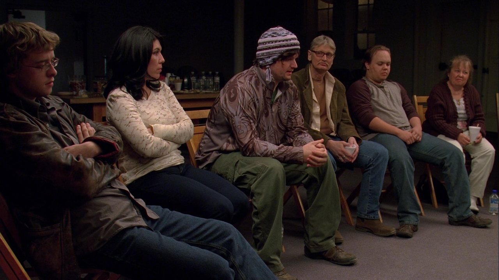
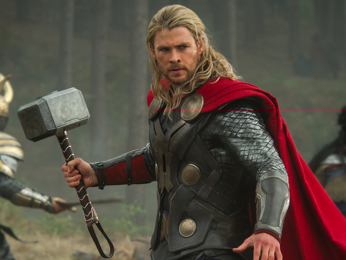
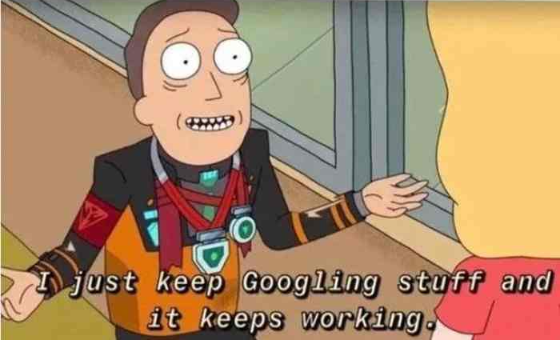
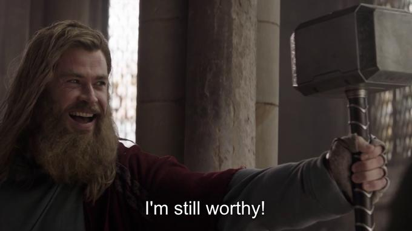

Introduction
Dear reader,
I hope you’re doing well.
I am doing great! Couldn’t be better. Thanks for asking, btw.
I am reaching out to let you know more about the main character in my life: ME. Specifically, how I ended up learning R.
Whether or not this story is good enough to end up in your inbox/my blog (same thing) is a matter of debate. But I must warn you that we shall not be writing any code today.
3, 2, 1, Action 🎬
“Hi, My name is Mwavu and I’m an addict. I’ve been using for 4 years…” 
You’re probably wondering how I ended up here. One does not simply build his whole software development career around R.
Let’s rewind to where it all started:
Last year of high school
I went to Alliance High School, btw.
During the last year of high-school, students get to choose the course they’d like to major in the university. I had no idea what to choose. I was pretty good at maths, so it had to be something centered around that.
After inquiring from my math teacher, he offered two suggestions: Statistics or Actuarial Science.
We went for a break and boy, did I do some deep research! By the end of the break, I had already made up my mind: Actuarial Science. A decision that was driven by two * checks notes * … uhhhmm three factors:
- My vast google search revealed that actuaries have a fat paycheck. Who doesn’t want that? I mean, I do.
- My aunt really championed for it, talking about a friend of hers who did the same course and now money aggressively hunts her down. Imagine!
- Rumours had it that the course was really difficult, with lots of math. “But I am excellent at maths, that won’t be a problem”, I said to myself. Besides, the university was said to be a fun place with lots of time to chill, I’d use that time to crunch the numbers.
I considered myself to be smart… Academically, at least. My grades heavily backed up that argument.
As fate would have it, I exceeded the cut-off points set for the course by a considerable margin. In September 2018, I enrolled into UoN. Or as they like to call it “The University of Nairobi”, emphasis on “The”. It’s said to be the largest university in our country.
First year, 2018
I put in a lot of effort in my first year, and it paid off. The grades were nothing less than excellent. Oh - and spoiler alert - it was also the last time.
During this first year, our lecturers mentioned of some papers outside the curriculum that one was supposed to take in order to become an actuary. And oh boy, weren’t they expensive!
One paper cost around 297 USD at that time. Bear with me if that’s cheap to you, I’m from the other side of the wealth grid.
Stories were told of those who didn’t take the papers. They’d end up as mere salespeople for insurance companies. They could not become actuaries. That’s when it hit me. I was not going to become an actuary. A part of me was slightly disappointed.
I started looking for alternatives. We had taken an introductory programming unit in our first semester and I found it really interesting. A friend of mine, Brian, had a desktop and since I didn’t have a laptop, I’d go to his house to learn from CS Dojo’s introductory course to python.
Second year, 2019.
After exploring some options, I saw data science as a good fit since I could teach myself from online resources. It required programming knowledge, either python or R.
I consulted with some of my classmates who seemed “woke”. I did not know much about computers, leave alone programming.
“Remember we did python in first year? I loved it and would like to learn more since I want to become a data scientist. Wdy think?”
“But we’re taking actuarial science and actuaries use R all the time. Have you not heard how the lecturers keep on mentioning R? Python is not a good choice. I’d recommend R.”
The advice was unanimous. I took it.
Census was conducted that same year in Kenya and I was one of the enumerators. I used all the money I earned to get myself a laptop. 199.703 USD, 2019. This would turn out to be one of the best decisions I’ve ever made.
I started experimenting with R after classes but I wasn’t consistent. It seemed different and less absorbable compared to the little python I knew.
Lockdown, March 2020
Covid19 hit and a countrywide lockdown was announced.
Truth be told, I was nursing a heartbreak at that time. Dark days those!
To avoid being strangled and tortured by sad nigga hours, I’d wake up at 4am, learn R the whole day. By 9pm I’d be so spent that I’d just drop dead on my bed.
Day in, day out.
After around 3 months, I felt as if I had become a god at R.

We call it “the hand-holding honeymoon phase”.
Four classmates had landed an internship at a big company and were being taught R. Their assignment was to rewrite some scripts in their own way. One of them told me. I’m always heavy on practice so I asked her to send me the assignment, I could also learn a thing or two.
The script she sent took around 7 minutes to run. I recall clearly it had 6 nested for loops. Let’s just say that it worked.
No, no… Don’t bring that “loops are bad in R” argument here. We’ve heard enough of it.
Okay, now that you’ve calmed down allow me to continue…
I sat down, analyzed what it was doing and the required output. After a few hours I had finished rewriting it. And my script… My script took a whooping 6 seconds to get the job done! Tell me if that isn’t some kind of god-shit! They couldn’t believe it. Neither could their manager, who I suppose was also learning R.
I started getting some freelancing gigs from a friend of mine, Paul, mostly student university assignments. I had never had so much money in my life. For the next 3 months I would make an average of 425.4 USD per month. Of course looking back now that isn’t a lot. But it was, back then.
First real job
After students went for holidays the earnings reduced drastically.
I was learning fast. I created a linkedin account. After a few weeks “some guy” I had connected with messaged me and asked for my phone number.
To this day I’m not sure why I thought he was another person who was job hunting like me, and so I didn’t even bother to check his profile.
Several weeks passed by. He called one day. I spoke to him casually, but I could detect seriousness in his voice. We talked about normal things, about life in general. We became friends, even though we’d never met. We’d call each other from time to time.
One day I decided to peek at his linkedin profile to see what he does. Aaand… Surprise surprise! The guy was an actuarial fellow, a principal actuary and an MD at a certain company. Imagine realizing this after like 5 months of us talking!
On our next call I asked why he didn’t tell me. “If I did we wouldn’t be friends as we are. Besides, it was out in the open. You could have looked at my profile.” Well, he was right.
He texted on May 2021 saying that the HR from the company would reach out to me and the discussion would be about my R skills.
After an oral interview, completing a project and a final physical interview, they offered me a job as a junior software developer.
And that, ladies and gentlemen, is when my career as an R developer took off.
“So, what happened to actuarial science?”, you ask.
Mwavu, the actuary
If I said it ended well I’d be lying. Even lovers fall out. This was no exception. I lost all interest in actuarial science. To date. From 2.2 (second year, second semester) I didn’t study anything concerning the course.
Fortunately or unfortunately both classes and exams were conducted online due to covid19.
Following my then heightening googling skills, getting answers from online sources proved to be easy enough and worked most of the time.
2.2 through 3.2 was a breeze.

I spent a better part of my days programming. Nothing beats the feeling of learning something that I both want and I’m super interested in.
June, 2021
I wanted to drop out after 3.2 was over but I decided to consult with friends and family first.
Let’s go through some of the advice, each from a different person:
“You’ve come so far to give up now”
“It’s just one year remaining”
“In fact, not one year. It’s six months.”
“You will never get a job. You might have been lucky this one time, but out here without a degree things are difficult.”
“There is no way you’re going to shame us. We paid a lot of school fees for you to drop out now. All the loans?! What shall we tell people?”
“A degree is like a key. It will open doors you cannot see now. The other option is to enroll for a computer science degree. Another 4 years.”
“I understand, it won’t add anything to you. But just for the sake of having one, finish it.”
“We’re not in the US. You’re not Steve Jobs or Mark Zuckerberg. Stop living in a utopia! If you ever want to get hired here in Kenya and get a good salary, you need to get a degree.”
Not sure if I’ve ever recovered from that last one. Damn!
All their arguments made sense, at least when viewed from a certain angle. The most striking thing was that none of them told me to go ahead and drop out. Not a single one!
At this point I hated school, or anything to do with it. I didn’t want to be there. I knew the degree was never going to help me anywhere in my career. It hasn’t, yet. I’m still waiting.💀
Btw, I’m not against going to college/university. I just didn’t like it.
Fourth year, 2022
Exams for both 4.1 and 4.2 were conducted physically, in the exam center. I dreaded this. I couldn’t google myself out of this one.
After the first paper I actually made up my mind: I’m quitting this shit.
Call me a lucky man but it happened that I was in the same major as my girlfriend, Brenda. She’d literally wake me up and drag me out of my room. Through her sheer force, I showed up for all the exams.
Even before the results were out, I knew I had flopped. Who the hell goes to the exam room, writes their registration number, signs on the answer sheet as required and then “helps” the lecturer invigilate the other students for the rest of the time? Me. All in the name of finishing a degree I was totally disinterested in.
Okay, I admit… I have exaggerated things a bit in the paragraph above, but you get the point. I did answer some questions but I didn’t think my answers were good enough to even get me a pass.
While others revised for the next day’s paper, I’d spend my time on stackoverflow going through old questions/answers and providing solutions to some. Almost all my reputation on stackoverflow can be attributed to that time period.
But fate, it seems, was hell-bent on ensuring I graduated. So, to my surprise, I finally did. Not with a pass, but a second class honors. Maybe I was smart after all. I guess we’ll never know.

Wind up
“Interesting story you have there, Mwavu. Earlier you stated that you wanted to become a Data Scientist. Did that happen?”
No. After I got that first job my career took a different turn: Software Development.
“You use R for software dev?!”
Yes.
“Why? I thought its only use is statistical & data analysis.”
That is what most people think. And rightly so. I am certainly not a pro at the language, but its appeal to me comes not from viewing it as a statistical & data analysis tool (which it is), but from looking at it as a programming language.
From how I see it, R has so much more to offer. For one, it is unusually good at creating UIs. Take a look at this tweet for example. Second, R integrates extremely well with other languages.
Admittedly, the main reason I use R is because I love it. There, I said it.
I am just not able to ditch it. I’ve tried to, many times. And failed at each attempt. Maybe coz it was my first, and that first love hits hard. I just can’t seem to move on.
It has its quarks, but so does every other language. I’d never write a compiler using it, of course. That’d be stupid.
All I’m saying is if I were to go back, I’d still pick R.
If a day comes and the language ceases to amaze me, I shall look back and say: “It was good while it lasted. And like all good things, it was bound to come to an end”.
Just like my letter to you, dear reader.
Yours truly,
Mwavu.